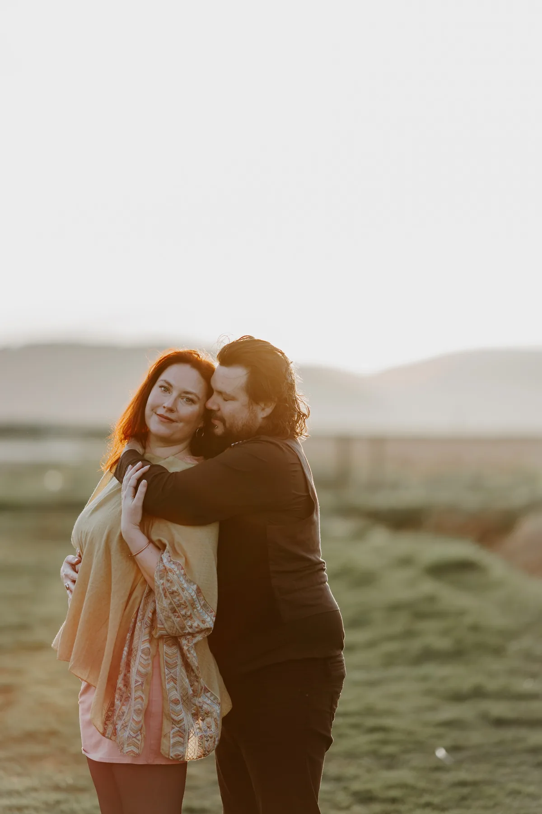

06 / The light
Sunset times for
a Seattle wedding.
When the sun sets in each month, and how to work back from it to your portraits and your ceremony.
By Alex Claudio Photography
In Seattle the sun sets at about 9:10 p.m. in late June and at 4:18 p.m. in mid-December.
That is almost five hours of difference, so a timeline that suits a July wedding leaves a December one in the dark before dinner. Find your month in the table, then work back from sunset to your portraits and your ceremony.
Part 1 of 2
Find your sunset
Sunset by month
These are the sunset times for Seattle in 2027. They move by a minute or two from one year to the next.
| Month | On the 1st | On the 15th |
|---|---|---|
| January | 4:28 p.m. | 4:45 p.m. |
| February | 5:10 p.m. | 5:33 p.m. |
| March | 5:54 p.m. | 7:15 p.m. |
| April | 7:39 p.m. | 7:59 p.m. |
| May | 8:21 p.m. | 8:40 p.m. |
| June | 8:59 p.m. | 9:09 p.m. |
| July | 9:10 p.m. | 9:03 p.m. |
| August | 8:44 p.m. | 8:22 p.m. |
| September | 7:50 p.m. | 7:21 p.m. |
| October | 6:49 p.m. | 6:21 p.m. |
| November | 5:52 p.m. | 4:33 p.m. |
| December | 4:20 p.m. | 4:18 p.m. |
The clocks change on March 14 and November 7 in 2027, and sunset moves an hour overnight each time. It goes from 6:12 to 7:13 p.m. in March, and from 5:44 to 4:43 p.m. in November. If your wedding falls near either date, check which side of the change it is on.
For the exact time on your date, use the U.S. Naval Observatory’s sun and twilight times.
Where the sun leaves your venue first
The published sunset is the moment the sun drops below a flat horizon, and few venues have one. Tall evergreens, a ridge to the west, or the building itself can take the direct light off a lawn well before that.
A venue that faces west over open water keeps the sun until the end. Ask your coordinator when the light leaves the ceremony site in your month, or visit at that hour before you set the time.
On a gray day
Under cloud the light is soft and even all afternoon, and the exact sunset time matters less. It also gets dim sooner. On a heavily overcast evening I take portraits earlier than the table suggests.
A Seattle wedding rain plan covers where to take them if it is wet.
Part 2 of 2
Work back from sunset
Portraits in the last hour
The best light for portraits is the last hour before sunset, when the sun is low and warm and reaches your faces from the side. Fifteen or twenty minutes of it is enough for portraits of the two of you.
Put those minutes on the timeline about forty-five minutes before sunset, and tell your planner and caterer so that nothing is served or announced while you are outside. With a 7:21 p.m. sunset in mid-September, you would step out at about 6:35.
Set the ceremony time
If you see each other before the ceremony, the group photographs are finished early and the ceremony can sit closer to sunset. The example timeline does this with a 4 p.m. ceremony.
If you wait until the aisle, every photograph that needs both of you happens afterwards. Count back from sunset: twenty minutes of portraits, the time your family list needs, and the ceremony itself.
Take a thirty-minute ceremony, a twenty-five-minute family list, and a 6:21 p.m. sunset in mid-October. The ceremony should start by 4:45, and 4:30 leaves room for a late start.
In summer, the sun sets during the reception
From mid-May to early August the sun sets after 8:30 p.m., hours after most ceremonies. Portraits straight after an afternoon ceremony are in high, hard sun, so I look for open shade then and plan a second, shorter set for the evening.
The good light arrives during dinner or the dancing. Choose the gap in advance, between the toasts and the first dance for example, and ask your planner to hold it.
Check that your coverage reaches it. Six hours that begin at 1 p.m. end at 7, two hours before a July sunset. Six, eight, or ten hours? helps you decide where the hours fall.
In winter, daylight ends before dinner
From the clock change in early November to late January the sun sets before 5 p.m., and in December it is down by 4:30.
For portraits in daylight, see each other first and take every group photograph before the ceremony. With a 3 p.m. ceremony, that puts your first look at about 1.
After sunset the sky stays deep blue for about half an hour, and city lights, candles, and lit windows begin to show in the photographs. A short set of portraits then looks nothing like the afternoon ones.
Send me your date and venue, and I will tell you when the light is best there.